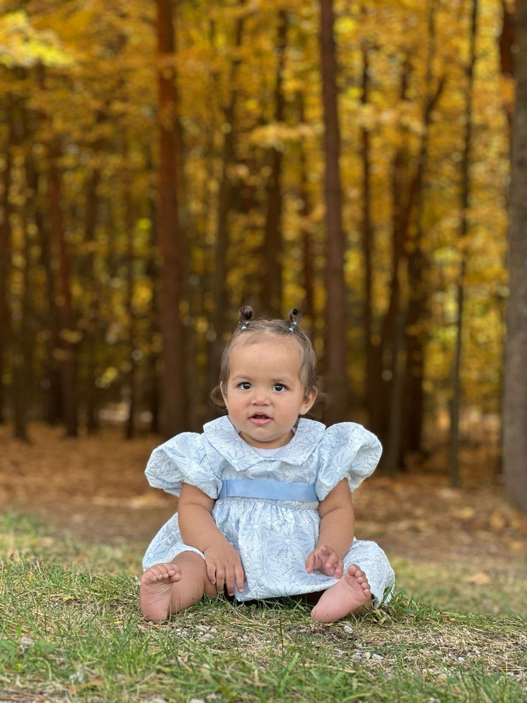

About Zuri Visuals

zuri
Holland-based senior & lifestyle photographer
I shoot high school seniors and graduation portraits across Holland, Zeeland, Grand Haven, and the West Michigan lakeshore. Natural light, real personality, and locations you care about: Lake Michigan beaches, downtown brick, dunes, and the hobbies that define your senior year.
Beyond senior work, I also photograph outdoor lifestyle, pets, and milestone portraits with the same approach: some direction, nothing stiff, with room for laughter, movement, and the real stuff of being seventeen or eighteen on the lakeshore.
New to senior photos? Read the senior picture guides on locations, outfits, timing, and pricing, or jump straight to session details.
Send a message to check class of 2026 availability.